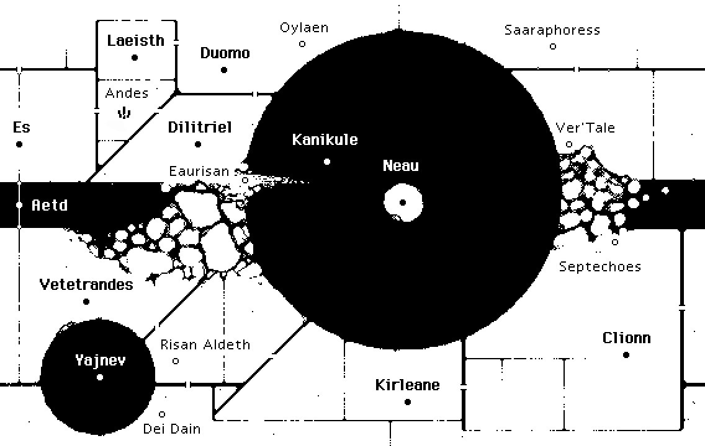
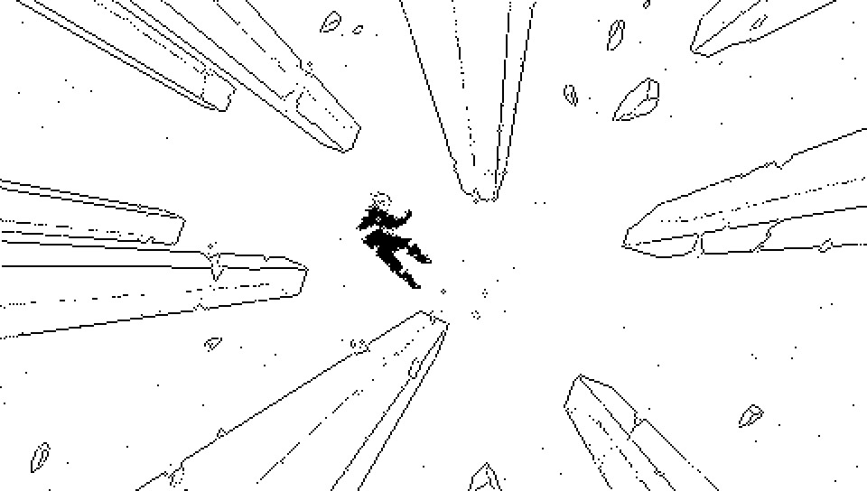
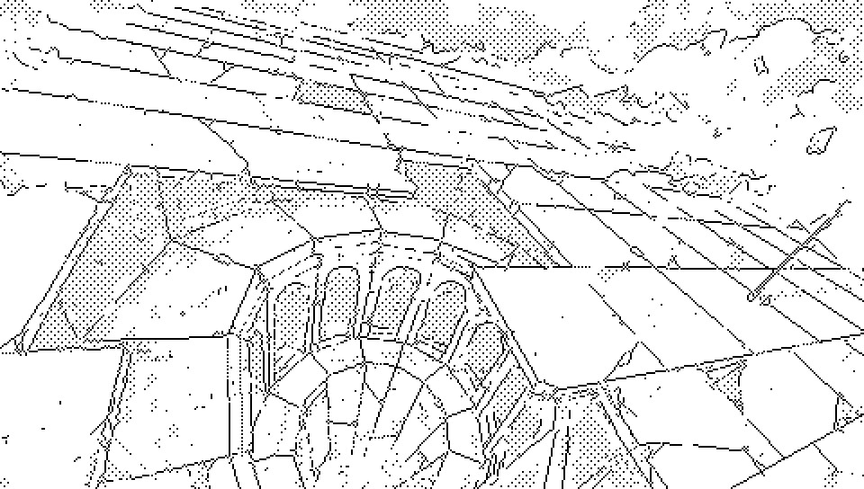
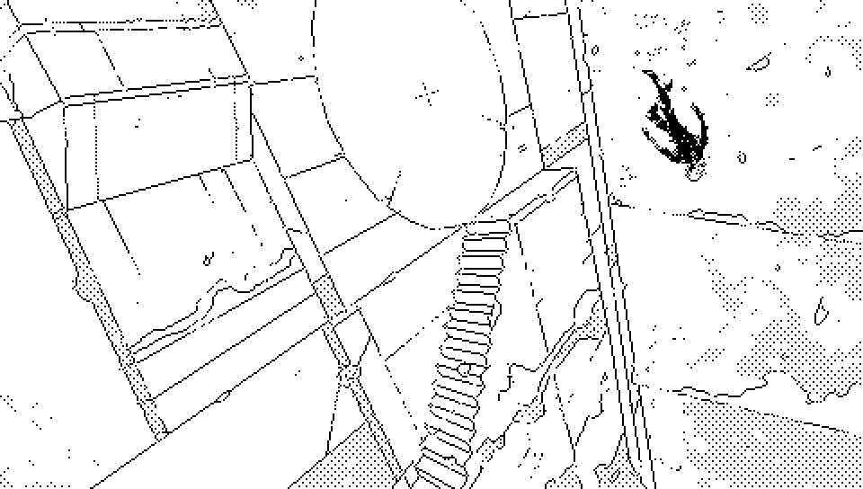
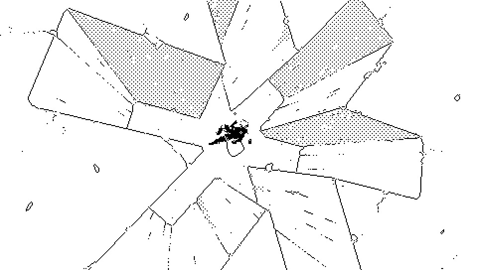
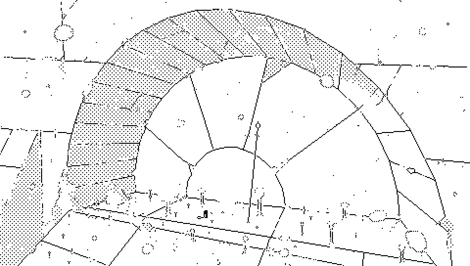
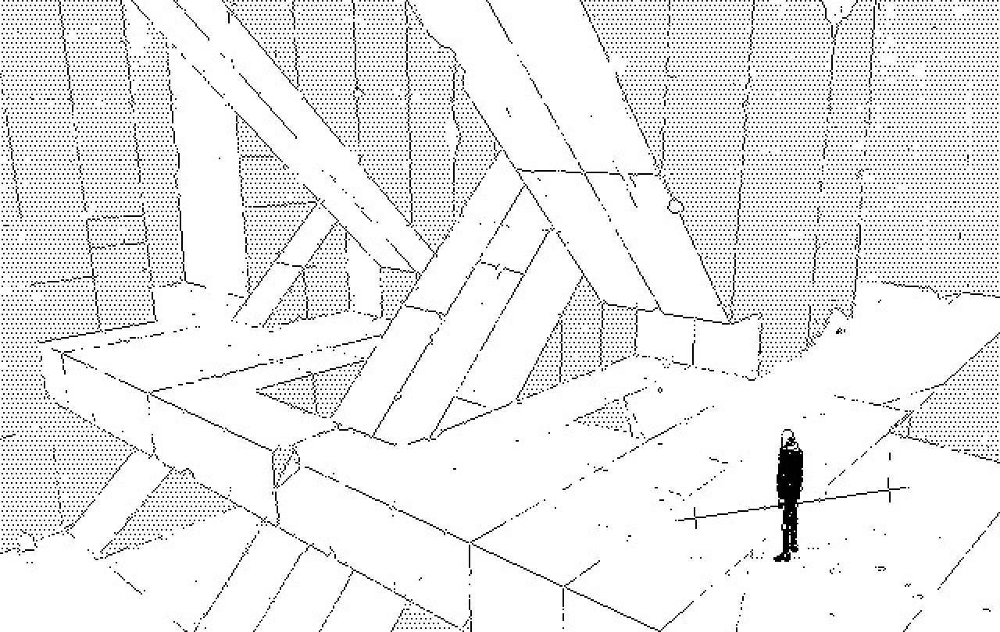
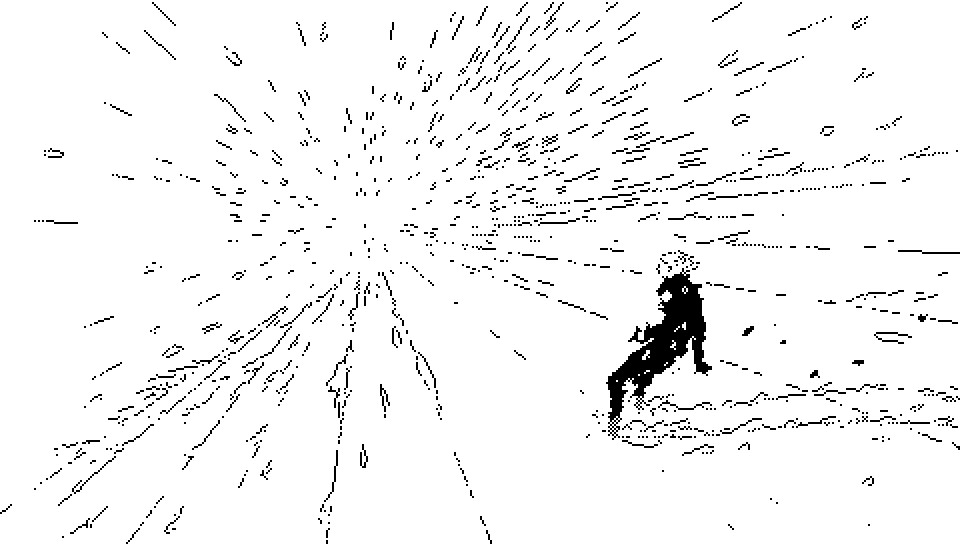

Quant ad Aliceffekt, nomin Ver'Tale in aliquot titul indic que carmin es part de un diurnal recuper et pot ne sequ in mod exact lini de tempor de album.

Dinaisth is the location onto which unfolds the events of the Neauismetica.
Dinaisth was periodically transformed and inhabited by multiple groups, each leaving traces of their visit in the form of tools, notes and artifacts. Its proximity to the Ehrivevnv megastructure, by which it is orbited, is the principal reason for which the earlier explorers landed on Dinaisth, its estimated position at the end of the universe's life is what brought the protagonists of the Neauismetica.

Vetetrandes es loc general circum explos de Yajnev.
Cum te apropinq ad epicentr de clausur, tempor fi plus et plus non mobil. Ib, te pot inven cadaver de Yajnev, et ub capit de il e es, un larv cav. Claus intr larv e es, forsan, sol exempl de spat qui pot es dic "extr" de Occurr.
Itiner trans Vetetrandes es sol posibil per duct de un Actor nam vac local qui es intr explos es non act, non oper et non rend. Vetetrandes es in hemisfer austral de Dinaisth et includ Risan Aldeth et Clionn, qui es non afect per Maelstrom.
Neon-Hermetists cred que hoc loc es un fract de Machin Soies antiq.
As you approach the epicenter of the lock, time becomes increasingly more unmoving. At its center, one would find the corpse of Yajnev, and where its head would have been, a hollow mask. Locked inside the mask was possibly, at one time, the only instance of space that can be said to be "outside" of the Occurring.
The trek across Vetetrandes is only possible through the guiding of an Actor, as the local void existing in Vetetrandes is unacted, unoperated and unrendered. Vetetrandes is also includes Risan Aldeth. It shares the southern hemisphere of Dinaisth with Clionn which is unaffected by the Maelstrom.
The Neon Hermetists believe this location to be an ancient and broken Soies Machine.

Laeisth es un desert in Dinaisth.
Il circumd un ater cav ub viv ils simulacra de rlionn proxim il umbr de castel de Andes. Laeisth es inter Es et Duomo, in hemisphaer de septentrion de Dinaisth. Aud capitul de Laeisthic.
Surrounding an Oasis, a blackened chasm where creeps the clones of its violent host rlionn, the Andes castel stands quiet. Laeisth is located between Es and Duomo, on the northen hemisphere of Dinaisth. Listen to the Laeisthic chapters.

Dilitriel is the central region of Dinaisth.

Duomo coper region boreal de Dinaisth.
Duomo posit ab boreal de Es et Laeisth, il hospit sol indigen habitats qui e exist ab advent de Neon Hermetists. Aud capitul de Duomic.
Duomo is located north of Es and Laeisth, it hosts the only remains of indigenous constructions from the earlier times before the arrival of Neon Hermetists. Listen to the Duomic chapters.

Kirleane es litor austral de ocean Kanikule.
Kirleane es posit in orient de Risan Aldeth et Dei Dain, in hemisfer austral de Dinaisth.
Kirleane is located east of Risan Aldeth and Dei Dain, on the southern hemisphere of Dinaisth.
Kanikule es ocean qui circumd Neau.
Kanikule es distort de spat qui da impres de ocean infinit. Un immortal pot deg tempor infinit ad percurr id, in mod efectiv ating litor extr mortal.
Dum te pot navig ab centr de id, Neau, te ne pot reven ad id, nam id ne ocup spat in ocean. Neau es urb circular in centr de Kanikule. Urb cum tect caerul es loc natal de Lietal, et etiam es loc ex qui Neauismetica deriv nomin de se.
Kanikule is a spacial distortion that gives the impression of an infinite ocean. An immortal would spend an infinite amount of time crossing it, effectively reaching the outer-shores mortal.
While one can sail away from its center, Neau, one cannot return to it, for it occupies no space in the ocean. Neau is a circular city at the center of Kanikule. The blue roofed city the birthplace of Lietal, and is also the place from which the Neauismetica derives its name.

Ver'Tale es region equatorial boreal de Dinaisth.
Un anomal de gravitat fac structur sin pond per un tempor, cum orbit de Aitasla es paralel cum equator de Dinaisth. Combinat de trah oscil infra et vent de forc de procell e cre un teren mult dificil ad navig. Insuls Vertale, aliquand script Ver'Tale, es plen de detrit ex machin de cunicul qui olim oper in Es.
A gravitational anomaly makes structures temporarily weightless when Aitasla's orbit is parallel with the equator of Dinaisth. The combination of the oscillating downward pull and gale-force winds have created a terrain very hard to navigate. The Vertale islands, sometimes written Ver'Tale, are filled with the debris from the tunneling machines that once operated in Es.
As far as Aliceffekt is concerned, the Ver'Tale name in some title indicates that the track is part of a recovered diary and may not exactly follow the album's timeline.

Es es desert vast et vac in hemisfer boreal de Dinaisth.
Plan de Es, mot per vents fort, cooper un ret vast de structur non ut. Profund in bacin deg Paradichlorisse, et Helianth, un gener de alg qui emit lumin et cresc in scal simil terass qui descend in profund de Dinaisth.
The wind-swept plains cover a vast network of disused structures. Sunken deep within the basin resides Paradichlorisse, and the Sunflowers a sort of light-emitting algae that grows on terasse-like steps that descend into the depths of Dinaisth.
incoming: audio faqs alicef aliceffekt children of bramble opal inquisitors habitants du soleil neauismetica neon hermetism ehrivevnv longest end nohlxeserre vetetrandes laeisth andes castel kirleane ver tale es characters neonev andes paradichlorisse yajnev devine lu linvega 2025